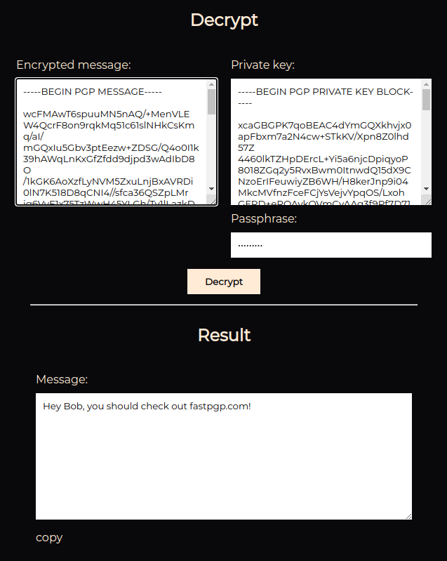

Let's start with the basics..
What even is PGP?
PGP, or Pretty Good Privacy is encryption software created by Phil Zimmerman. Zimmerman wanted to share awarness of privacy and how to protect ourselves on the internet.
Phil belived that cryptography "is about the right to privacy, freedom of speech, freedom of political association, freedom of the press, freedom from unreasonable search and seizure, freedom to be left alone."
If you want to learn more about Phil and why he created PGP,
go to "Why I wrote PGP" by Phil Zimmerman
Okay.. How does PGP work?
We are not getting too technical here today, this guide is meant for complete beginners, and they don't need to know all the magic happening behind.
PGP Basics start with keys - private and public. PGP key is a string of data generated with PGP using encryption alghoritms. These keys are then used by you and others, to encrypt and decrypt messages.
Public key is the key you can freely give out to others. It is used by other people to encrypt messages or other data that they can then freely send, with no risk of it getting leaked, read by someone else than the recepient, or anything like that. They can even post it publicly, it doesn't matter. For everyone else, it's just a random string of characters, with no meaning.
Private key, is the key you use to decrypt messages encrypted with your public key that someone else sent you. YOU DON'T SHARE THIS KEY WITH ANYONE, UNDER ANY CIRCUMSTANCES.
Enough text, let's get to examples..
Bob and Alice
Bob and Alice is the usual example when learning about PGP.
Bob and Alice are working on a business together, and need to share some secret information. They don't want this information to be leaked or just read by someone else that might get access to their account or the conversation.
That's why they choose to use PGP
Generating keys
Alice wants to send Bob a message encrypted with PGP, so Bob goes to the PGP tool of his choice and generates his PGP keypair.
He enters the required data: username, email and passphrase of his choice.
To make sure he doesn't forget his passphrase he writes it down on a piece of paper.
Now he stores his PRIVATE KEY securely, and sends his PUBLIC KEY over to Alice.
Go to tool.fastpgp.com and try it for yourself.Alice sends a mesage
Alice receives Bob's public key, and goes over to tool.fastpgp.com and chooses the "Encrypt" option.
Alice enters Bob's public key, writes the message for him, and leaves out the optional inputs for now.
In the result window, she now has encrypted message that she sends back over to Bob, without worrying about privacy.
Go to tool.fastpgp.com and try it for yourself.Bob reads the message
Bob receives Alice's message, and goes over to tool.fastpgp.com and chooses the "Decrypt" option.
Bob enters message from Alice, and his private key and passphrase he chose earlier.
In the result window, he now can read the message from Alice in plain text.
 Go to tool.fastpgp.com and try it for yourself.Okay, what about the Sign and Verify options?
Let's say that you are someone known publicly, but people often fake your posts and messages for their profit.
PGP can help even with that. The sign option uses the private key to add a signature to the end of cleartext message, it's not encrypting the message, just adding a virtual signature.
If people have your public key, they can then verify this signature with the help of the Verify option. If the private key corresponding to this public key signed this message, it verifies. If the message was signed by someone else, signature failes to verify.